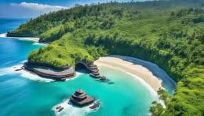
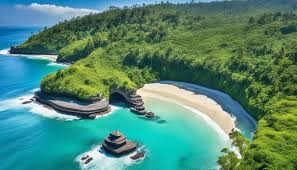
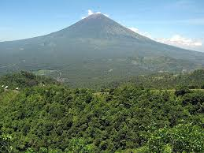
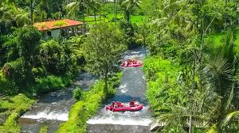

Parque Nacional de Bali Barat
Um dos principais parques da ilha, oferecendo uma rica biodiversidade, trilhas e vistas deslumbrantes do mar.
Um dos principais parques da ilha, oferecendo uma rica biodiversidade, trilhas e vistas deslumbrantes do mar.
A montanha mais alta de Bali, ideal para trekking e famosa por seu nascer do sol espetacular.
O maior rio de Bali, conhecido por suas oportunidades de rafting e vistas de exuberante vegetação.
